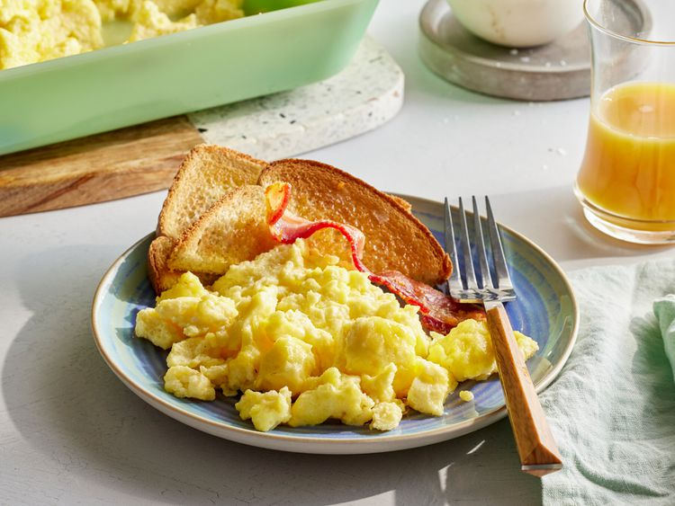

Go Back
Baked Scrambled Eggs

Description
These baked scrambled eggs are light and fluffy and are a snap to put together for a big crowd!
Ingredients
- ½ cup butter, melted
- 24 large eggs
- 2 ¼ teaspoons salt
- 2 ½ cups milk
Steps
- Gather all ingredients. Preheat the oven to 350 degrees F (175 degrees C).
- Pour melted butter into a 9x13-inch glass baking dish.
- Whisk eggs and salt together in a large bowl until well blended. Gradually whisk in milk. Pour egg mixture into
the buttered dish.
- Bake uncovered in the preheated oven for 10 to 15 minutes. Stir egg mixture and continue to bake until eggs are
set, 10 to 15 minutes more.
- Serve and enjoy!